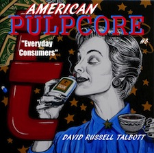
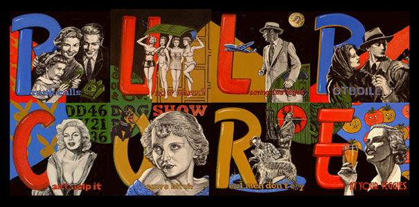
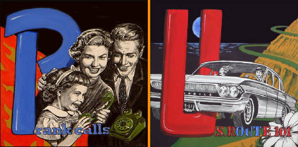
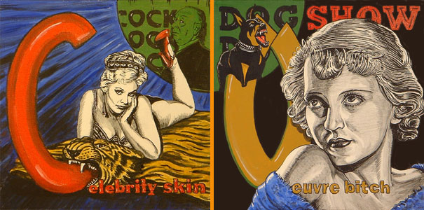

Like me on Facebook
Follow me on Tumblr
FOR SALE:
Pulpcore.Etsy.com

"American Pulpcore: Everyday Consumers"
Available on Etsy
ARTICLES & INTERVIEWS:
Union Tribune San Diego
Pulpcore according to David Russell Talbott
Dr. Sketchy's Featured Art Star Event
Clowntown featured in Juxtapoz
The Dark Side of the Limelight
Pulpcore at Art Basel Know Exhibition
PULPCORE:
THE ART OF
DAVID RUSSELL TALBOTT
Home
New Pulp
American Pulpcore
Hollywood Pulpcore
Bio/Contact
  
Hover mouse over images to pause animation
GALLERY APPEARANCES:
2015
53rd Annual International Exhibition
San Diego, CA
Art Walk
San Diego, CA
San Diego Comic Con
San Diego, CA
2014
San Diego Comic Con
San Diego, CA
Art of Pride Festival
San Diego, CA
2013
San Diego Comic Con booth C-07
July 18 – 21, San Diego, CA
52nd Annual International Exhibition
San Diego, CA
2012
Leslie/Lohman
New York, NY
Museum of the Living Artist
San Diego, CA
The Tractor Room
San Diego, CA
2011
Copro Gallery
Santa Monica, CA
La Luz de Jesus Gallery
Los Angeles, CA
Distinction Gallery
Escondido, CA
2010
Copro Gallery
Santa Monica, CA
Junc Boutique
San Diego, CA
La Luz de Jesus Gallery
Los Angeles, CA
Visual Art Center New Jersey
Summit, NJ
Curated by Susan Kismaric MOMA NYC
2009
Distinction Gallery
Escondido, CA
Night Gallery
Santa Ana, CA
Scribble'08 Exhibition Comic Con
San Diego, CA
Luis de Jesus Seminal Projects
San Diego, CA
Grand Central Art Center
California State University, Fullerton
2008
Art Basel – Murphy Books/Vanguard Fair
Miami, FL
Leslie/Lohman Gallery
New York, NY
Keep-A-Breast Benefit
Oceanside, CA
Distinction Gallery
Escondido, CA
The Gallery
Atlanta, GA
Vermillion
Seattle, WA
Strychnin Gallery
Berlin, Germany
2007
Perihelion Arts
Phoenix, AZ
Art Of Framing Gallery
San Diego, CA
Joe Buddys
Portland, OR
Clothing Optional
Chicago, IL
Showroom Gallery NYC
New York, NY
Thinkspace Gallery
Los Angeles, CA
Toy Room Gallery
Sacramento, CA
Redletter1 Gallery
Tampa, FL
2006
Anno Domini Gallery
San Jose, CA
Planet Rooth
San Diego, CA
Art At Large
New York, NY
Subject Matter
Costa Mesa, CA
Tangent Lab
Wichita, KS